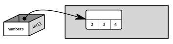
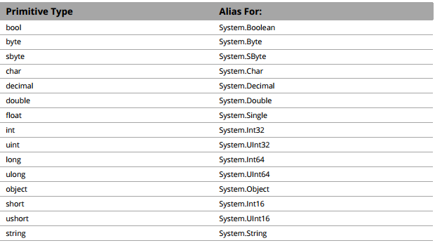
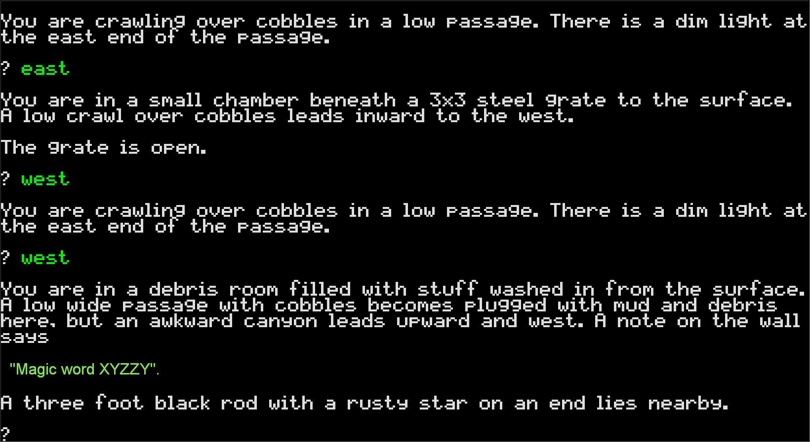

class: center, middle # 강의 4 : +alpha, struct, operator overloading --- # Default parameters 함수에 패러미터를 넣어주지 않았을 때 사용되는 가본값을 지정할 수 있습니다. ```csharp void PrintToConsole(string text, bool allCaps = false) { if (allCaps) Console.WriteLine(text.ToUpper()); else Console.WriteLine(text); } ``` --- # Getter-only methods 프로퍼티에 Getter만 구현하는 경우도 있습니다 ```csharp public class StopWatch { public long seconds; public int Minutes { get { return seconds/60; } } public int Hours { get { return seconds/3600; } } ... } ``` --- # 수업을 진행하기 전에 잠깐만 퀴즈! (Value vs Reference, Stack vs Heap) True or False 1. 스택에 있는 모든 데이터는 코드 어디서나 접근할 수 있다. 2. Value 타입의 내용물은 힙에 저장될 수 있다. 3. Value 타입의 내용물은 언제나 힙에 저장된다. 4. Reference 타입의 내용물은 언제나 힙에 저장된다. 5. Garbage Collector는 스택과 힙에 있는 사용하지 않는 데이터를 정리해준다. 6. Value 타입에 null을 줄 수 있다. 7. a와 b가 Reference 타입이고, 같은 오브젝트를 가르키면, a의 변경사항이 b에 반영된다. 8. a와 b가 같은 값을 가지고 있는 Value 타입이라면, a의 변경사항이 b에 반영된다. --- # 2에 대한 설명 .center[] ```csharp int[] numbers = new int[] {2, 3, 4}; ``` --- # 문제 하나 더 ```csharp static int Main(string args[]) { int[] array = new int[] {1, 2, 3}; Console.WriteLine("{0}, {1}, {2}", array[0], array[1], array[2]); ChangeArray(arr); Console.WriteLine("{0}, {1}, {2}", array[0], array[1], array[2]); } static void ChangeArray(int[] arr) { arr = new int[] {4, 5, 6}; } ``` --- # 문제 하나 더 ```csharp static int Main(string args[]) { int[] array = new int[] {1, 2, 3}; Console.WriteLine("{0}, {1}, {2}", array[0], array[1], array[2]); ChangeArray(arr); Console.WriteLine("{0}, {1}, {2}", array[0], array[1], array[2]); } static void ChangeArray(int[] arr) { arr = new int[] {4, 5, 6}; } ``` 함정: new를 부르는 순간 기존 array와 arr는 다른 오브젝트를 가르키게 됩니다. 그리고 함수에 레퍼런스 타입의 오브젝트가 패러미터로 들어오면 레퍼런스가 **복사** 됩니다. --- # Struct --- # Struct Reference 타입이 아닌 Value 타입의 오브젝트를 만들고 싶다면? ex. Vector2i ```csharp Vector2i vec1 = new Vector2i(1, 2); Vector2i vec2 = vec1; vec2.x = 3; Console.WriteLine("({0}, {1})", vec1.x, vec1.y); Console.WriteLine("({0}, {1})", vec2.x, vec2.y); ``` --- # Struct 정의하는 방법 : class하고 거의 같습니다. ```csharp public struct Vector2i { public int x; public int y; public Vector2i(int x, int y) { this.x = x; this.y = y; } } ``` --- # Struct의 사용 용도 - 자주 생성하게 되는 데이터 덩어리들 (heap 보다 stack에 보관하는 것이 더 효율적이다) - 메모리 할당량이 크지 않은 값들 (즉 데이터가 copy되도 별 상관 없는 오브젝트들) C++의 struct하고는 의미가 매우 다릅니다! --- # 사실... 지금까지 우리가 알고있던 기본 타입들 (int, float, bool, string 등)은 모두 struct였습니다! ```csharp int i = 0; float f = 0f; string str = ""; ``` ```csharp Int32 i = new Int32(); Single f = new Single(); String str = new String(); ``` --- # 사실...  --- # readonly - 하노이 탑에서 한번 등장하긴 했지만 제대로 설명을 안해서... readonly 필드 -> 선언 이후 값을 바꾸는 것이 불가능 ```csharp public struct Vector2i { public readonly int x; public readonly int y; public Vector2i(int x, int y) { this.x = x; this.y = y; } } ``` --- # readonly ```csharp Vector2i vec = new Vector2i(1, 2); // allowed Console.WriteLine("{0}, {1}", vec.x, vec.y); // not allowed vec.x = 6; ``` --- # Immutable value types 보통 struct는 데이터를 변화시킬 수 없는 타입으로 만드는게 좋습니다 Value 타입의 오브젝트 상태를 변화시킬 수 있으면 Value 타입인지 Reference 타입인지 혼동할 수 있어요 --- class: center, middle # string에 관한 오해 --- # 전에 나왔었던 질문 string이 Reference 타입이라고 하지 않았나요??? ```csharp public static Main() { string name = "Mighty No. 9"; Console.WriteLine(name); // Mighty No. 9 AppendToString(name); Console.WriteLine(name); // Mighty No. 9 } public static AppendToString(string text) { text += " The Sequel"; } ``` 이러한 이유는 string이 Reference 타입이면서도 immutable하기 때문입니다 --- # 실제로 일어나는 일 ```csharp public static Main() { string name = "Mighty No. 9"; Console.WriteLine(name); AppendToString(name); Console.WriteLine(name); } public static AppendToString(string text) { text = text + " The Sequel"; ********************* | (이것이 하나의 새로운 string 오브젝트) } ``` --- # 하여튼 가장 중요한 것은... class -> Reference Type struct -> Value Type --- # Inheritance (상속) 이젠 상속이라는 개념에 대해 알아봅시다. --- # Inheritance 코드를 짜다 보면 클래스가 더욱 많아지기 시작하고... 공통되는 요소들을 찾기 시작한다. (특히 게임 개발을 하다 보면 이런 일이 많이 생긴다.) ```csharp public class Monster { public int hp; public int damage; public float criticalHitModifier; } public class Player { public int hp; public int damage; public int money; } public class Magician { public int hp; public int damage; public int mp; private Skill[] skills; } ``` --- # 뭔가 반복을 많이 하고 있는 것 같은데... 이들이 가지고 있는 공통적인 요소 : Hp, Damage 프로퍼티 하나로 묶을 수 없을까? --- # Inheritance ```csharp public class Creature { public int hp; public int damage; } public class Monster : Creature { public float criticalHitModifier; } public class Player : Creature { public int money; } public class Magician : Creature { public int mp; private Skill[] skills; } ``` 하드코딩을 정말로 많이 줄이게 되었죠? --- # 유의사항 상속 구조는 무조건 is-a-relationship여야 한다! A Monster is a Creature A Player is a Creature A Magician is a Creature 만약에 is-a가 안 통한다면 상속 구조를 잘못 짠 것. --- # 유의사항 상속이 적용하는 것들은... - field - member - property 적용되지 않는 것들은... - Constructor --- # Using inheritance 그럼 한번 제대로 클래스 몇개를 구현해 봅시다. ```csharp public class Creature { public int Hp { get; set; } public int Damage { get; set; } public void Attack(Creature creature) { creature.Hp -= Damage; } public Creature() : this(100, 0) {} public Creature(int hp, int damage) { Hp = hp; Damage = damage; } } ``` --- # constructor 상속받기 ```csharp public class Player : Creature { public int Money { get; private set; } public Player() : this(200, 20, 100) {} public Player(int hp, int damage, int money) : base(hp, damage) { Money = money; } } ``` --- # 상속받은 클래스 사용하기 ```csharp Player player = new Player(100, 20, 1000); Console.WriteLine(player.Hp); Console.WriteLine(player.Damage); Console.WriteLine(player.Money); ``` ```csharp Player player = new Player(100, 20, 1000); // okay Creature player = new Player(100, 20, 1000); // okay Player player = new Creature(100, 20, 1000); // compile error ``` --- # 타입 체크 ```csharp Creature creature = new Player(1000); if (creature is Player) { Console.WriteLine("The current creature is Player!"); } ``` --- # 오브젝트 타입 변경하기 (casting) 생각해보니까 이걸 왜 아직까지 말하지 않았는진 모르겠지만... 변수의 타입을 변경할 수 있고, 이것을 casting이라고 합니다 implicit casting: ```csharp int score = 10; float scoreAsFloat = score; Player player = new Player(); Creature creature = player; ``` explicit casting: ```csharp double score = 10.0; float scoreAsFloat = (float)score; Creature creature = new Player(); Player player = (Player)creature; ``` --- # 오브젝트 타입 변경하기 (casting) 하지만 호환되지 않는 타입을 변경할 경우에는 컴파일러 에러, 더 안 좋은 경우 런타임 에러가 납니다. ```csharp string scoreStr = "100"; int score = (int)scoreStr; // compile error (cannot convert type 'string' to 'int') Creature creature = new Magician(); Player player = (Player)creature; // runtime error (InvalidCastException) ``` # 상속 구조에서 타입 변환 ```csharp if (player is Player) { Player player = (Player)creature; // use player... } ``` # 좀 더 안전하고 간편한 타입 변환 (as 키워드) ```csharp Player player = creature as Player; if (player != null) { // use player... } ``` --- # Homework 3 맛보기 혹시 이런 게임을 아시나요?  --- # 텍스터 어드벤쳐 게임 3주정도의 시간 안에 스터디에서 배운 내용을 바탕으로 콘솔에서 뭔가 재밌게 할 수 있는 게임을 만들어보자! --- # 구현해야 하는 것 inheritance와 polymorphism으로 설계된 그리드 형태의 방들. 플레이어의 텍스트 입력을 알아들을 수 있는 parser. 간단한 아이템 / 인벤토리 시스템. (시간이 남는다면) 다양한 퍼즐/이벤트 등. --- # 보너스 전투 시스템. (+ 60) JSON 파일에서 맵 로딩. (+ 80) 단순 그리드 형태가 아닌 방 구조. (+ 100) --- # 첫 번째 Task 다음과 같은 클래스들을 만듭니다. - GameWorld - Player - Cell - Door --- # 대략적인 클래스 구조 GameWorld - Cell 오브젝트들을 그리드 형태로 가지고 있어야 함 Player - 현재 맵에서의 위치 정보를 가지고 있어야 함. (int x, int y) Cell - 칸 하나를 나타냄 - 이 셀에 대한 텍스트 정보와 함께 - 이 셀에 있는 Obstacle의 리스트를 가지고 있음. Obstacle (base class) - 플레이어를 막는 오브젝트 (지금은 벽의 역활을 함) Direction (enum) - 4개의 방향을 나타냄 --- # Input 받기 ``` Welcome to the Mighty No. 9 Text Adventure Game! ■ ■ ■ ■ ■ ■ ■ d ■ ■ ■ ■ . . . ■ . . . ■ . ■ ■ . ■ . ■ . ■ l ■ . ■ ■ . . . d . ■ . . . ■ ■ ■ ■ ■ ■ l ■ ■ ■ ■ ■ ■ . . . l . d . ■ . ■ ■ ■ ■ . ■ . ■ ■ ■ l ■ ■ . ■ . ■ . d . . . ■ ■ l ■ ■ ■ . ■ . ■ . ■ ■ . . . . . d . . . ■ ■ d ■ ■ ■ ■ ■ ■ ■ ■ ■ ■ p ■ . ■ . ■ . ■ . ■ ■ ■ ■ ■ ■ ■ ■ ■ ■ ■ ■ You are in an empty room. [Enter a command] north Opening door... You are in an empty room. [Enter a command] west A wall is blocking your way. [Enter a command] dir Available directions: north(locked door), east, south(door) [Enter a command] east You are in an empty room. [Enter a command] ``` --- # 공식적으로 과제는 토요일에 내겠습니다 왜냐하면 아직 안 배운 내용이 너무나 많기 때문에 지금은 하지 마세요... --- # 그럼 끝. ## 모두 수고하셨습니다!